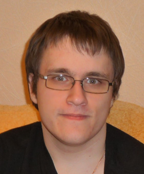

Прывітанне! Я - Аляксей Арцёмаў, беларускі паэт рускага паходжання (гучыць, га?). Нарадзіўся я ў 1991 годзе ў Туле (Расія), дзе і жыву.
Скончыў Тульскі дзяржаўны ўніверсітэт. Фіналіст конкурсаў беларускага ПЭН-цэнтра для маладых літаратараў, трапіў у шорт-ліст прэміі "Дэбют".
Публікаваўся ў "Маладосці", "ЛіМе", іншых выданнях і калектыўных зборніках. Выпусціў кнігу "Скрозь кіламетры" (2016, пры падтрымцы СБП).
Перакладаю паэзію і прозу на беларускую мову (пераважна з англійскай). На гэтым сайце буду публікаваць свае творы.
Хочацца верыць, што буду.
Цягам апошніх гадоў я часта адказваў на тыповыя пытанні журналістаў і чытачоў. Прапаноўваю прачытаць адказы на папулярныя пытанні, калі цікава даведацца, хто я і чаму я такі.
Апошнія абнаўленні на сайце - 29 сакавіка 2017.
Цягам апошніх гадоў я часта адказваў на тыповыя пытанні журналістаў і чытачоў. Прапаноўваю прачытаць адказы на папулярныя пытанні, калі цікава даведацца, хто я і чаму я такі.
Апошнія абнаўленні на сайце - 29 сакавіка 2017.